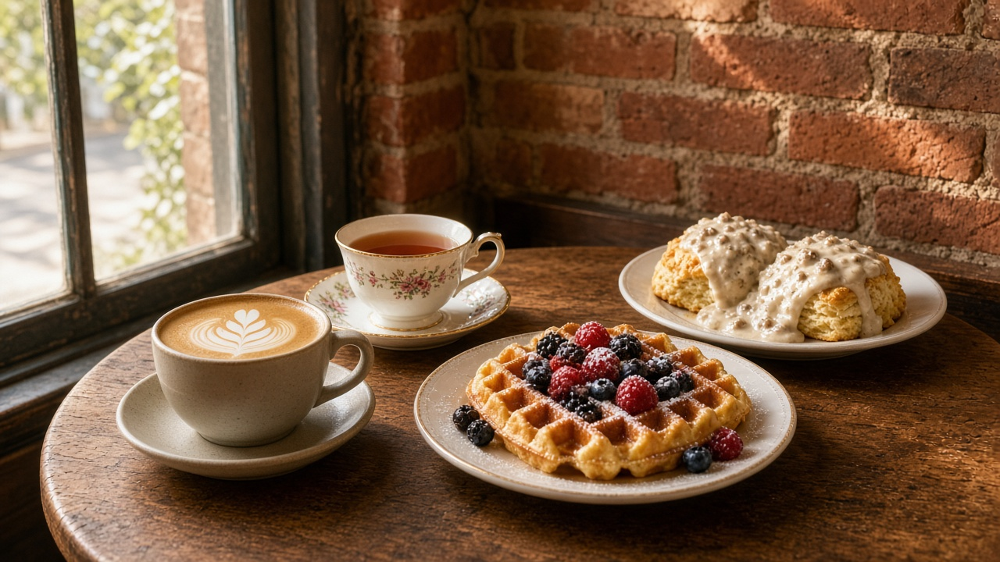

Gourmet coffee, fine teas & delicious food and pastry

Sample photo“A warm, elegant, inviting cafe with Gourmet Coffee, Fine Teas, great refreshments and delicious food & pastry!” Guests say the ambiance takes you back in time. Rated 4.8 from 60 ratings on Restaurantji.
Cafe on Main hosts private events such as baby showers, with custom menus. Email to ask about dates and what you have in mind.
“Simply amazing food and coffee! Leaps and bounds better than the other places in town!”RESTAURANTJI
“It’s a beautiful place with a very friendly atmosphere. I had a chicken salad and my hubby had a burger. We absolutely loved it…”RESTAURANTJI
“This cafe is so charming and the staff is so friendly and accommodating. The ambiance takes you back in time and the food is absolutely delicious!!”RESTAURANTJI
15 N Main St
Inman, SC 29349
Mon 9 AM–3 PM · Tue closed
Wed–Fri 9 AM–3 PM
Sat 9 AM–3:30 PM · Sun closed
Email cafeonmaininman@gmail.com
Text (864) 708-1203
Listings vary: some also mention Thu–Sat dinner 5–8 PM. Please confirm before you come.